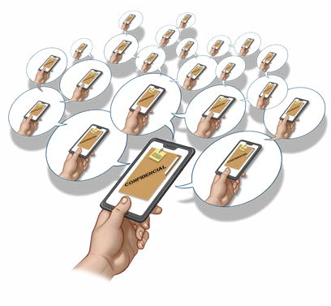

PENSE BEM ANTES DE POSTAR
Nas redes sociais as informações se propagam rapidamente e depois que algo é divulgado dificilmente pode ser apagado ou controlado. Alguém pode já ter copiado e passado adiante. Lembre-se: uma vez postado, sempre postado. Considere que você está em um local público • tudo que você posta pode ser visto por alguém, tanto agora como no futuro.

SEJA SELETIVO AO ACEITAR SEGUIDORES
Quanto maior sua rede, maior a exposição de seus dados, postagens e lista de contatos. Isso aumenta o risco de abuso dessas informações. Aceitar qualquer contato facilita a ação de pessoas mal-intencionadas. Configure sua conta como privada, quando possível Verifique a identidade da pessoa antes de aceitá-la em sua rede • bloqueie contas falsas
LIMITE O COMPARTILHAMENTO DE INFORMAÇÕES DO PERFIL
Algumas redes sociais não permitem contas privadas e dão acesso público às informações do seu perfil. Para controlar como tais informações são compartilhadas, há ajustes que você pode fazer. Evite compartilhar publicamente informações pessoais • por exemplo, número de telefone Ajuste o público-alvo das informações que compartilha
Veja mais no PDF completo